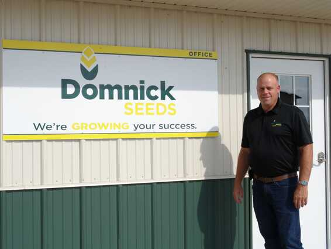

Owner / Sales
Jim Domnick
Jim has been a cornerstone of Domnick Seeds since 1995, carrying forward the family business with deep seed industry experience and practical knowledge of DEKALB hybrids and Asgrow varieties.